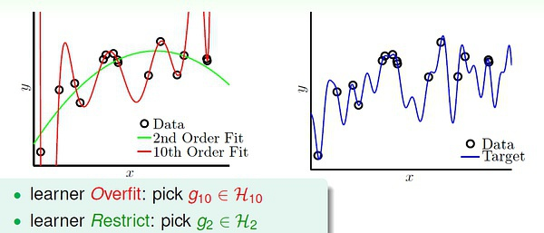

过拟合经常发生在机器学习中 在统计学中，过拟合是“产生与特定数据集过于紧密或完全对应的分析，因此可能无法拟合其他数据或可靠地预测未来的观测结果。”过度拟合的模型是一种统计模型，其中包含的参数多于数据所能证明的参数。过度拟合的本质是在不知不觉中提取了一些残余变化（即噪声），好像这种变化代表了潜在的模型结构。当统计模型不能充分捕获数据的基础结构时，就会发生欠拟合。不合适的模型是缺少正确指定模型中出现的某些参数或术语的模型。例如，当将线性模型拟合到非线性数据时，将发生欠拟合。这样的模型往往具有较差的预测性能。
在机器学习中可能发生过拟合和欠配合。 存在过拟合的可能性是因为用于选择模型的标准与用于判断模型的适合性的标准不同。例如，可以通过最大化某些训练数据集的性能来选择模型，但其适用性可能取决于其在看不见的数据上表现良好的能力;然后，当模型开始“记忆”训练数据而不是“学习”从趋势推广时，就会发生过度拟合。 作为一个极端的例子，如果参数的数量等于或大于观察的数量，则模型可以简单地通过整体记忆数据来完美地预测训练数据。但是，这样的模型在进行预测时通常会严重失败。 过度拟合的可能性不仅取决于参数和数据的数量，还取决于模型结构与数据形状的一致性，以及模型误差的大小与数据中预期的噪声或误差水平的比较。即使拟合模型没有过多的参数，也可以预期拟合关系在新数据集上的表现不如用于拟合的数据集（有时称为收缩的现象）。
欠拟合的一些原因
- 特征维度过少
- 模型过于简单
欠拟合的一些解决方案
- 增加特征维度
- 增加训练数据；
过拟合的一些原因
- 特征维度过多
- 模型假设过于复杂
- 参数过多
- 训练数据过少
- 噪声过多
过拟合的一些解决方案
- 获取更多数据，数据增强
- 使用合适的模型，减少网络的层数、神经元个数
- dropout
- 正则化，限制权值变大
- 数据清洗：将错误的 label 纠正或者删除错误的数据。
- 结合多种模型
过拟合的根本原因
- 观察值与真实值存在偏差 训练样本真身就是一种抽样，会存在误差，当用机器学习去拟合时，是去拟合抽样的样本X，而不是实际的值，实际上是学习到了真实规律以外的随机误差。
- 数据太少，导致无法描述问题的真实分布 根据统计学的大数定律，在重复试验中，随着试验次数的增加，事件发生的频率趋于一个稳定值。但数据太少的时候，频率与概率不见得接近。
- 数据有噪音和模型太复杂 有噪音时，更复杂的模型会尽量去覆盖噪音点，即对数据过拟合。这样，即使训练误差很小（接近于零），由于没有描绘真实的数据趋势，依然会产生过拟合。还有一种情况，如果数据是由我们不知道的某个非常非常复杂的模型产生的，实际上有限的数据很难去“代表”这个复杂模型曲线。我们采用不恰当的假设去尽量拟合这些数据，效果一样会很差，因为部分数据对于我们不恰当的复杂假设就像是“噪音”，误导我们进行过拟合。
如下图所示，10次的曲线并不如2次的曲线更能描绘出趋势
